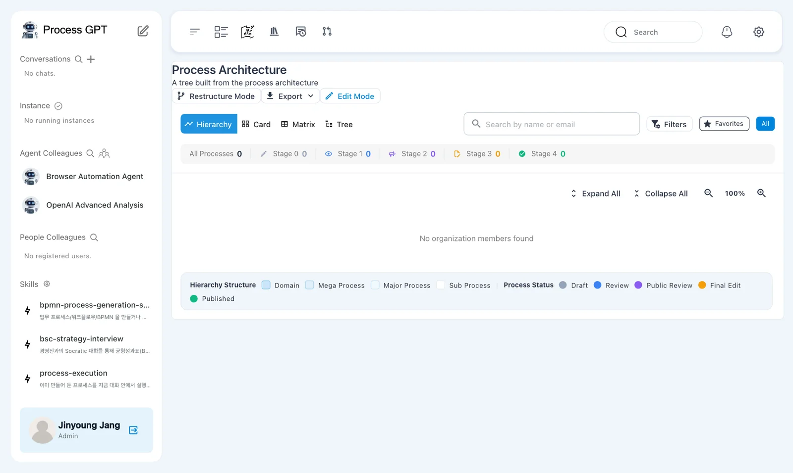
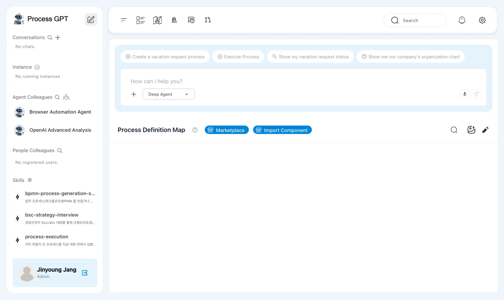
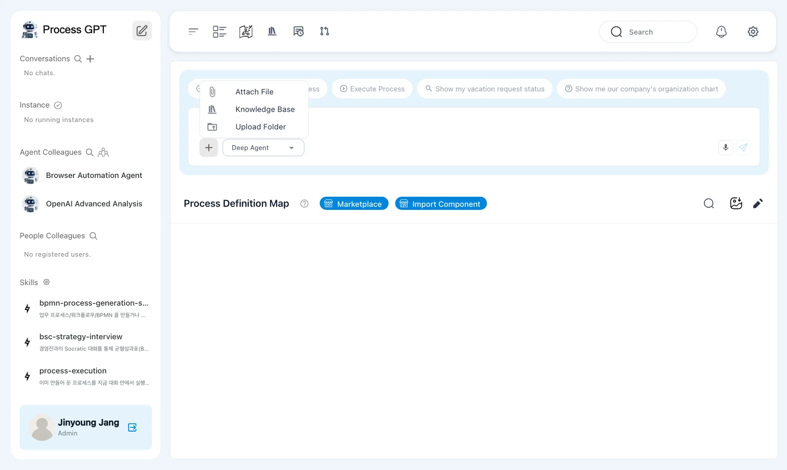
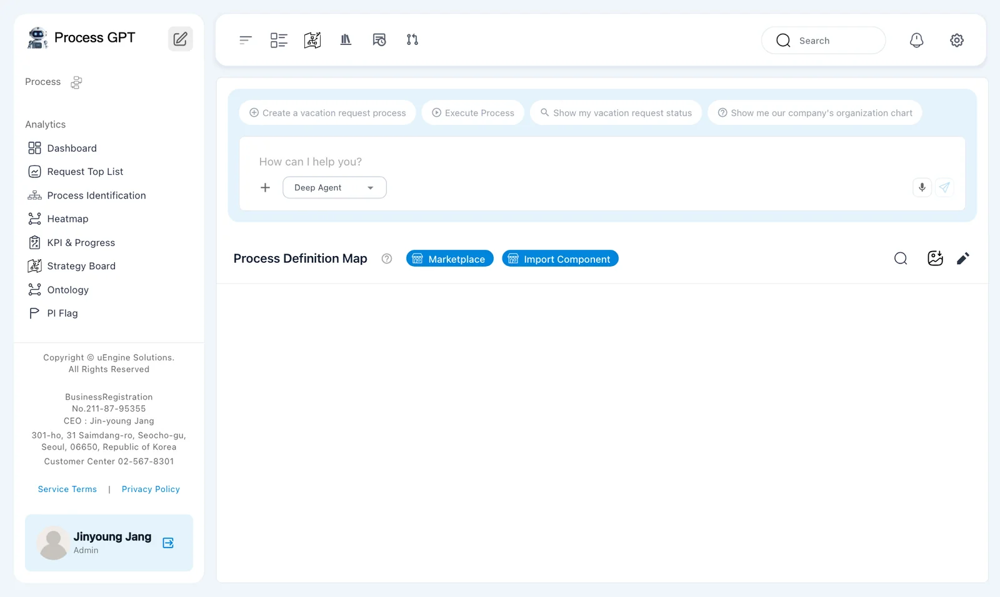
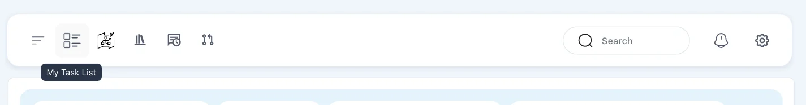
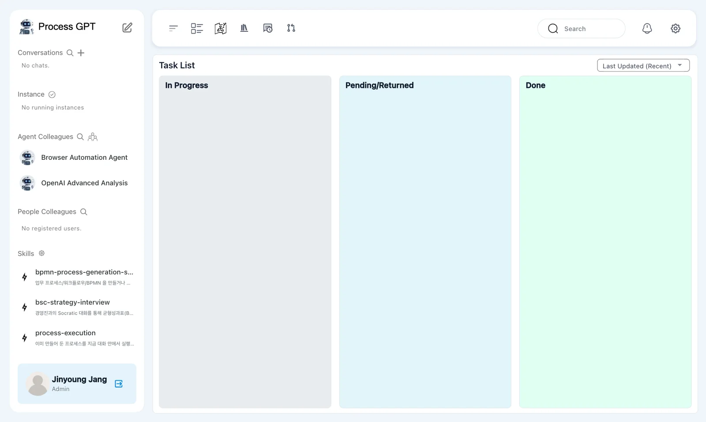
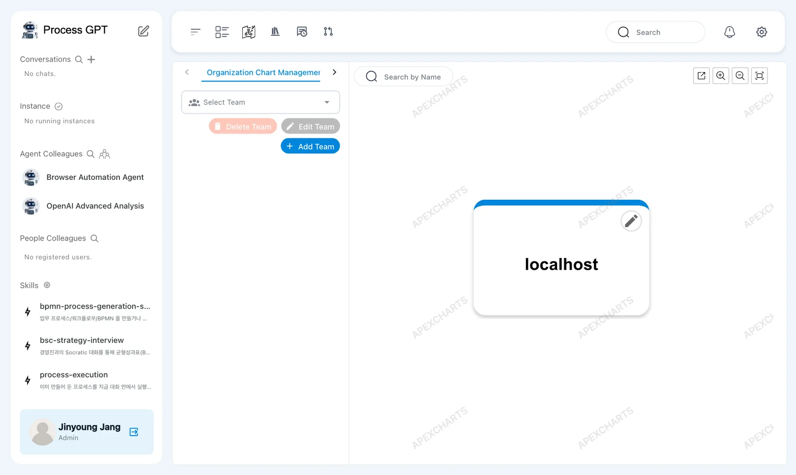
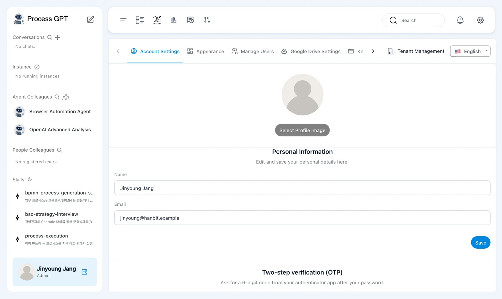

Take a tour of the Process Architecture that opens when you sign in, the home screen with the chat box, the left sidebar, the top bar, and the screens you'll open often — My Task List, the organization chart and settings — to learn where to do what.
After sign-in — Process Architecture#
When you sign up in Chapter 1, the Process Architecture opens right away. This screen shows the company's processes organized in a hierarchy: Domain › Mega Process › Major Process › Sub Process. Use Hierarchy · Card · Matrix · Tree at the top to change the view, and the row of numbers counts which stage (0–4) each process is at. There are no processes yet, so everything is 0.

Home — the chat box and the Process Definition Map#
Click the pencil icon to the right of "Process GPT" at the top of the sidebar to open the screen you'll use most in this tutorial. It has the chat box at the top and the Process Definition Map below. When this tutorial says "home", it means this screen.

Most work in Process GPT starts in this chat box. Describe the process you want in words and it's created (Chapter 3); attach company documents and ask, and it answers based on them (Chapter 8). Click an example sentence above the box ("Create a vacation request process" and others) to put it in the box.
| Button in the box | What it does |
|---|---|
| ＋ | Attach File, Knowledge Base, Upload Folder — attach documents to the chat |
| Deep Agent ▾ | Choose the agent for the chat: Basic Agent, Deep Agent or Codex |
| 🎤 | Type by voice |

The processes you create pile up by area on the Process Definition Map. A new process first goes under Uncategorized. Use Marketplace for shared process templates, and Import Component to bring in processes exported from elsewhere (Chapter 4).
Left sidebar#
The sidebar shows what's in progress and the colleagues you work with.
| Section | What you see | Icons in the header |
|---|---|---|
| Conversations | Your chat rooms so far | 🔍 search, ＋ new chat room |
| Instance | Each running process, one by one | ✓ View completed instance list |
| Agent Colleagues | AI agents. Browser Automation Agent and OpenAI Advanced Analysis are there from the start | Person icon → Organization & Agent Management |
| People Colleagues | People in the same company | 🔍 search |
| Skills | Skills that agents use. From the start: process creation (bpmn-process-generation-skill), strategy interview (bsc-strategy-interview) and process execution (process-execution) |
⚙ Manage Skills |
| Process | Shortcuts to process definitions | |
| Analytics | Dashboard, Request Top List, Process Identification, Heatmap, KPI & Progress, Strategy Board, Ontology, PI Flag |

You'll see the word instance a lot from now on. If a process definition is the blueprint, an instance is one actual case running by that blueprint. There is one "Sales Proposal Creation" process, but each customer request creates a new instance.
Top bar#

| Icon | Name | What it does |
|---|---|---|
| ☰ | Collapse/Expand Sidebar | Gives you more room on screen |
| List | My Task List | Shows the tasks assigned to you |
| Map | Strategy Board | Connects company strategy to processes |
| Book | Knowledge Base | The company's documents (Chapter 8) |
| Speech bubble | My feedback | Feedback you've left |
| Branch | Merge Requests | Review change requests for processes and skills |
| 🔍 · 🔔 · ⚙ | Search · Notifications · Setting |
My Task List#
My Task List shows the tasks assigned to you in three columns: In Progress · Pending/Returned · Done. When you run a process, each step creates a task for its owner, and that task appears here as a card.

Organization chart#
Click the person icon next to Agent Colleagues in the sidebar to open the organization chart. Create teams and add members in Organization Chart Management on the left and they appear in the chart on the right; build AI agent colleagues in the Create Agent tab next to it (click › to reach it, Chapter 9). For now there's only the company (tenant) name localhost.

Settings#
Click ⚙ on the top bar to open the settings. These are the tabs this tutorial uses (Chapter 18).
| Tab | What it does |
|---|---|
| Account Settings | Name and photo, two-step verification |
| Manage Users | Manage people in the same company |
| Knowledge Base · MCP Servers · Environments | Documents, tools and settings that agents use |
| Tenant Management | Company (tenant) information |
| English ▾ | Display language |

Try it — Take a tour#
- On the Process Architecture that opens after sign-in, click Card and Tree and see the view change.
- Open home with the pencil icon at the top of the sidebar. Click Deep Agent ▾ in the chat box to see the three agents, then click ＋ to see the menu. Don't send anything.
- Click My Task List on the top bar and check that all three columns are empty.
- Open the organization chart with the person icon next to Agent Colleagues in the sidebar.
- Open ⚙ settings and skim the tab names.
Next chapter#
Now that you know the screens, the next chapter uses the chat box on the home screen to create your first process, "Sales Proposal Creation" (Chapter 3).
Check your understanding
- How is a process definition different from an instance?
- Where do you click to attach company documents to the chat box?
- When a process runs, where do you see the tasks assigned to you?
Answers
- A definition is the blueprint that lists the steps, owners and forms; an instance is one actual case running by that blueprint. One definition can run many instances.
- Click ＋ in the chat box and choose Attach File (files on your computer), Knowledge Base (company documents you've uploaded) or Upload Folder.
- In My Task List on the top bar. It's split into In Progress · Pending/Returned · Done columns.